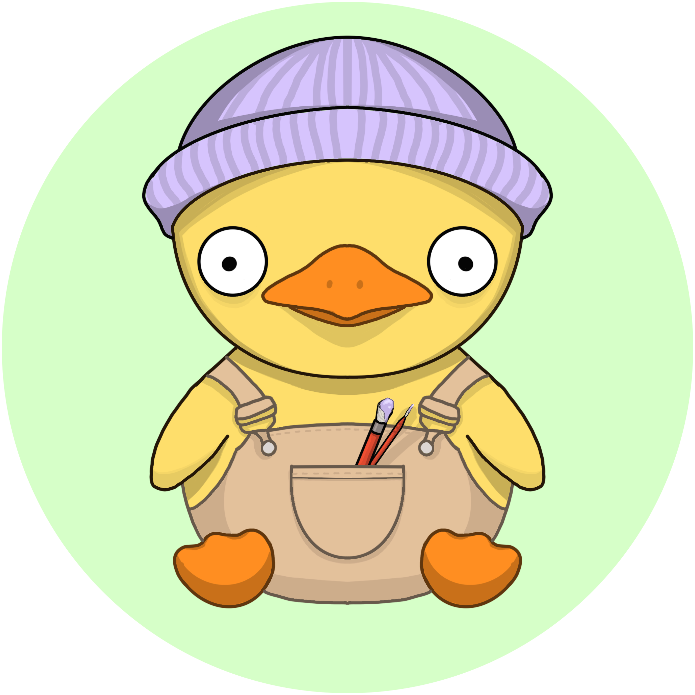

LU VAZQUEZ
This is my developer story.
- Growing up, my family was fortunate enough to have a 90s personal computer with a brick like tower and a cube style monitor. The downside, however, was we did not have an internet connection.
- I remember playing around with the paint application - that is where my fascination with computers and technology began, and also, where my love for digital art came to fruition.
- As I got older, I realized I was somewhat tech savvy and really began to enjoy using computers. However, It never really went beyond the typical personal usage.
- After high-school, I thought I wanted to pursue something in the medical field, but I quickly learned I was not entirely passionate about that field.
- My first job at a call center, led me into my first job in tech.
- After some experience with working with code, I fell in love with tech. But trying to learn on my own has been overwhelming to the point where I didn’t know where to start.
- I aplied and got accepted into Refcode, and I’m excited for this opportunity to grow and learn!
